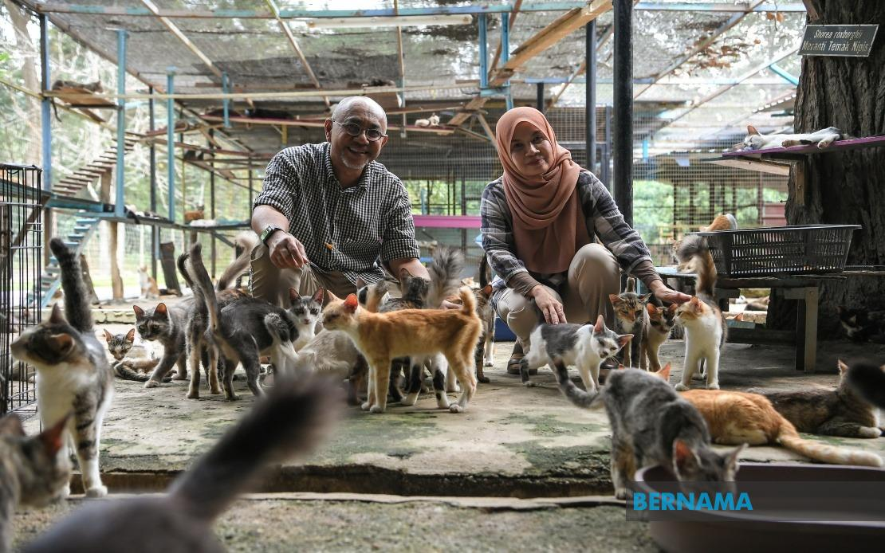

Founder & Manager of Bustana Kucing, Perlis
Bustana Kucing is the largest cat shelter in Perlis, taking care of more than 2,000 cats.

This organization was established to protect stray animals and provide care, treatment, and shelter for cats in need.
Address:
Taman Ular dan Reptilia Negeri Perlis,
Sungai Batu Pahat,
02400 Kangar, Perlis
Phone:
018-6682303 / 013-4300443
Social Media:
Facebook: bustanakucing
Instagram: @bustanakucing
App: beritakucing